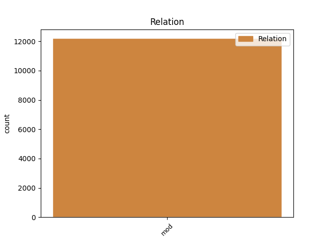

Distribution of features within this leaf


Agreement Rules sorted by frequency.
- When the dependent token is the modifer(mod) of the head token, and the dependent token is ADJ.
1 Tekijät _ _ _ _ 0 _ _ _
2 ovat _ _ _ _ 0 _ _ _
3 autonomiseen autonominen ADJ A Case=Ill|Degree=Pos|Derivation=Inen|Number=Sing 4 mod _ _
4 vasemmistoon vasemmisto NOUN N Case=Ill|Number=Sing 0 _ _ _
5 kuuluvia _ _ _ _ 0 _ _ _
6 henkilöitä _ _ _ _ 0 _ _ _
7 , _ _ _ _ 0 _ _ _
8 jotka _ _ _ _ 0 _ _ _
9 tavallisesti _ _ _ _ 0 _ _ _
10 esiintyvät _ _ _ _ 0 _ _ _
11 nimikkeiden _ _ _ _ 0 _ _ _
12 " _ _ _ _ 0 _ _ _
13 Antifascistisk _ _ _ _ 0 _ _ _
14 aktion _ _ _ _ 0 _ _ _
15 " _ _ _ _ 0 _ _ _
16 tai _ _ _ _ 0 _ _ _
17 " _ _ _ _ 0 _ _ _
18 Revolutionära _ _ _ _ 0 _ _ _
19 fronten _ _ _ _ 0 _ _ _
20 " _ _ _ _ 0 _ _ _
21 alla _ _ _ _ 0 _ _ _
22 . _ _ _ _ 0 _ _ _
1 Tekijät _ _ _ _ 0 _ _ _
2 ovat _ _ _ _ 0 _ _ _
3 autonomiseen _ _ _ _ 0 _ _ _
4 vasemmistoon _ _ _ _ 0 _ _ _
5 kuuluvia kuulua VERB V Case=Par|Degree=Pos|Number=Plur|PartForm=Pres|VerbForm=Part|Voice=Act 6 mod _ _
6 henkilöitä henkilö NOUN N Case=Par|Number=Plur 0 _ _ _
7 , _ _ _ _ 0 _ _ _
8 jotka _ _ _ _ 0 _ _ _
9 tavallisesti _ _ _ _ 0 _ _ _
10 esiintyvät _ _ _ _ 0 _ _ _
11 nimikkeiden _ _ _ _ 0 _ _ _
12 " _ _ _ _ 0 _ _ _
13 Antifascistisk _ _ _ _ 0 _ _ _
14 aktion _ _ _ _ 0 _ _ _
15 " _ _ _ _ 0 _ _ _
16 tai _ _ _ _ 0 _ _ _
17 " _ _ _ _ 0 _ _ _
18 Revolutionära _ _ _ _ 0 _ _ _
19 fronten _ _ _ _ 0 _ _ _
20 " _ _ _ _ 0 _ _ _
21 alla _ _ _ _ 0 _ _ _
22 . _ _ _ _ 0 _ _ _
1 Kahdeksassa kahdeksan NUM Num Case=Ine|Number=Sing|NumType=Card 2 mod _ _
2 maakunnassa maa#kunta NOUN N Case=Ine|Number=Sing 0 _ _ _
3 puolestaan _ _ _ _ 0 _ _ _
4 väki _ _ _ _ 0 _ _ _
5 väheni _ _ _ _ 0 _ _ _
6 ja _ _ _ _ 0 _ _ _
7 eniten _ _ _ _ 0 _ _ _
8 menettäneitä _ _ _ _ 0 _ _ _
9 maakuntia _ _ _ _ 0 _ _ _
10 olivat _ _ _ _ 0 _ _ _
11 Etelä-Savo _ _ _ _ 0 _ _ _
12 ja _ _ _ _ 0 _ _ _
13 Satakunta _ _ _ _ 0 _ _ _
14 . _ _ _ _ 0 _ _ _
1 * _ _ _ _ 0 _ _ _
2 28. _ _ _ _ 0 _ _ _
3 toukokuuta _ _ _ _ 0 _ _ _
4 2009 _ _ _ _ 0 _ _ _
5 : _ _ _ _ 0 _ _ _
6 Soviet Soviet PROPN N Case=Nom|Number=Sing 8 mod _ _
7 Storysta _ _ _ _ 0 _ _ _
8 tutkintapyyntö tutkinta#pyyntö NOUN N Case=Nom|Number=Sing 0 _ _ _
1 Samoihin sama PRON Pron Case=Ill|Number=Plur|PronType=Ind 2 mod _ _
2 aikoihin aika NOUN N Case=Ill|Number=Plur 0 _ _ _
3 hän _ _ _ _ 0 _ _ _
4 valtasi _ _ _ _ 0 _ _ _
5 myös _ _ _ _ 0 _ _ _
6 rikkauksistaan _ _ _ _ 0 _ _ _
7 kuuluisan _ _ _ _ 0 _ _ _
8 Kolkhiksen _ _ _ _ 0 _ _ _
9 . _ _ _ _ 0 _ _ _
1 Eläkemaksuun _ _ _ _ 0 _ _ _
2 , _ _ _ _ 0 _ _ _
3 joka _ _ _ _ 0 _ _ _
4 oli _ _ _ _ 0 _ _ _
5 viivästyneenä _ _ _ _ 0 _ _ _
6 tämän _ _ _ _ 0 _ _ _
7 lain _ _ _ _ 0 _ _ _
8 tullessa _ _ _ _ 0 _ _ _
9 voimaan _ _ _ _ 0 _ _ _
10 , _ _ _ _ 0 _ _ _
11 sovelletaan _ _ _ _ 0 _ _ _
12 tämän _ _ _ _ 0 _ _ _
13 lain _ _ _ _ 0 _ _ _
14 voimaan _ _ _ _ 0 _ _ _
15 tullessa _ _ _ _ 0 _ _ _
16 voimassa _ _ _ _ 0 _ _ _
17 olleita olla AUX V Case=Par|Degree=Pos|Number=Plur|PartForm=Past|VerbForm=Part|Voice=Act 18 mod _ _
18 säännöksiä säännös NOUN N Case=Par|Number=Plur 0 _ _ _
19 . _ _ _ _ 0 _ _ _
Disagree Examples:
1 Hienoa _ _ _ _ 0 _ _ _
2 , _ _ _ _ 0 _ _ _
3 että _ _ _ _ 0 _ _ _
4 rooleihin _ _ _ _ 0 _ _ _
5 oli _ _ _ _ 0 _ _ _
6 löytynyt _ _ _ _ 0 _ _ _
7 oikean oikea ADJ A Case=Gen|Degree=Pos|Number=Sing 8 mod _ _
8 ikäisiä ikäinen ADJ A Case=Par|Degree=Pos|Derivation=Inen|Number=Plur 0 _ _ _
9 ja _ _ _ _ 0 _ _ _
10 hyvin _ _ _ _ 0 _ _ _
11 laulavia _ _ _ _ 0 _ _ _
12 näyttelijöitä _ _ _ _ 0 _ _ _
13 . _ _ _ _ 0 _ _ _
1 Muuten _ _ _ _ 0 _ _ _
2 hauskaa _ _ _ _ 0 _ _ _
3 , _ _ _ _ 0 _ _ _
4 mutta _ _ _ _ 0 _ _ _
5 muut _ _ _ _ 0 _ _ _
6 ryhmän _ _ _ _ 0 _ _ _
7 jäsenet _ _ _ _ 0 _ _ _
8 ovat _ _ _ _ 0 _ _ _
9 vähintään _ _ _ _ 0 _ _ _
10 kymmenen kymmenen NUM Num Case=Nom|Number=Sing|NumType=Card 11 mod _ _
11 vuotta vuosi NOUN N Case=Par|Number=Sing 0 _ _ _
12 nuorempia _ _ _ _ 0 _ _ _
13 . _ _ _ _ 0 _ _ _
1 Voitelin _ _ _ _ 0 _ _ _
2 pari pari NUM Num Case=Nom|Number=Sing|NumType=Card 3 mod _ _
3 leipää leipä NOUN N Case=Par|Number=Sing 0 _ _ _
4 ja _ _ _ _ 0 _ _ _
5 söin _ _ _ _ 0 _ _ _
6 aamiaisen _ _ _ _ 0 _ _ _
7 vuoteessa _ _ _ _ 0 _ _ _
8 takkatulen _ _ _ _ 0 _ _ _
9 loisteessa _ _ _ _ 0 _ _ _
10 lukien _ _ _ _ 0 _ _ _
11 mielenkiintoista _ _ _ _ 0 _ _ _
12 kirjaa _ _ _ _ 0 _ _ _
13 suomalaisten _ _ _ _ 0 _ _ _
14 talonpoikaislevottomuuksista _ _ _ _ 0 _ _ _
15 1050-luvulla _ _ _ _ 0 _ _ _
16 . _ _ _ _ 0 _ _ _
1 Pari pari NUM Num Case=Nom|Number=Sing|NumType=Card 2 mod _ _
2 vuotta vuosi NOUN N Case=Par|Number=Sing 0 _ _ _
3 sitten _ _ _ _ 0 _ _ _
4 ? _ _ _ _ 0 _ _ _
1 Kaksi kaksi NUM Num Case=Nom|Number=Sing|NumType=Card 2 mod _ _
2 kesää kesä NOUN N Case=Par|Number=Sing 0 _ _ _
3 olen _ _ _ _ 0 _ _ _
4 haaveillut _ _ _ _ 0 _ _ _
5 vanhanaikaisten _ _ _ _ 0 _ _ _
6 puisten _ _ _ _ 0 _ _ _
7 kattotikkaiden _ _ _ _ 0 _ _ _
8 tekemisestä _ _ _ _ 0 _ _ _
9 tai _ _ _ _ 0 _ _ _
10 parin _ _ _ _ 0 _ _ _
11 puutarhahuonekalun _ _ _ _ 0 _ _ _
12 rakentamisesta _ _ _ _ 0 _ _ _
13 , _ _ _ _ 0 _ _ _
14 mutta _ _ _ _ 0 _ _ _
15 vielä _ _ _ _ 0 _ _ _
16 ei _ _ _ _ 0 _ _ _
17 ole _ _ _ _ 0 _ _ _
18 ehtinyt _ _ _ _ 0 _ _ _
19 ... _ _ _ _ 0 _ _ _